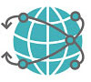
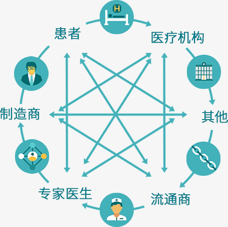

LEBEN以区块链为基础，采用全新智能合约框架设计，研发出针对医疗行业构建的可信可深度共享的技术平台，LEBEN生态中的患者、医生、医疗产业机构、技术服务者，均会在其中获得全新模式体验。我们将会改变这个传统的自闭的医疗行业，为人类的健康和生命的延续作出贡献。

医疗资源分布不均，导致各地区医疗发展差异巨大，LEBEN将打破地域、种族、体制等界限，实现医疗资源均质化远程投放。
LEBEN也将改变医疗行业“知识不能有效共享和利用”的现状，医生利用LEBEN思维投影技术，可轻松将医学知识和临床经验转化为可度量、可计算、可追踪的智能合约，通过智能合约商城实现医学知识和临床经验的有偿共享。其他人可以通过我们的设备或APP调用这些智能合约来帮助诊断和治疗。
整个过程共享者不必担心数据泄漏，使用者也不需要下载和保存数据，LEBEN的可信交换技术可以保证医疗数据真正的流动起来，让更多人享受到优秀的医疗服务。

以服务医疗行业为使命，LEBEN的生态愿景是：打破医疗行业数据割裂现状，深度赋能医疗行业各方参与者，积极推动医疗行业业务创新，并最终助力医疗行业商业模式的优化重构，实现医疗资源的均质化和全民健康覆盖。